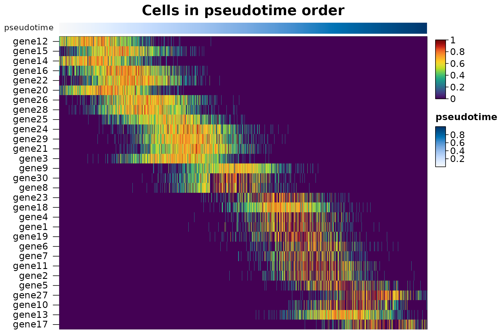
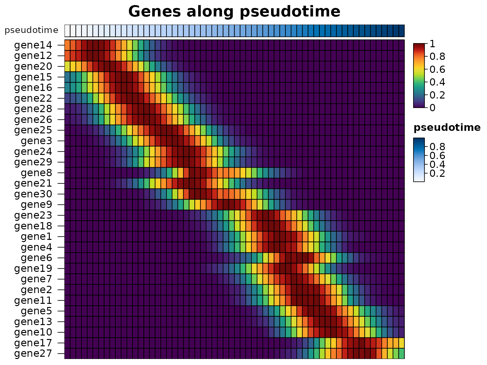
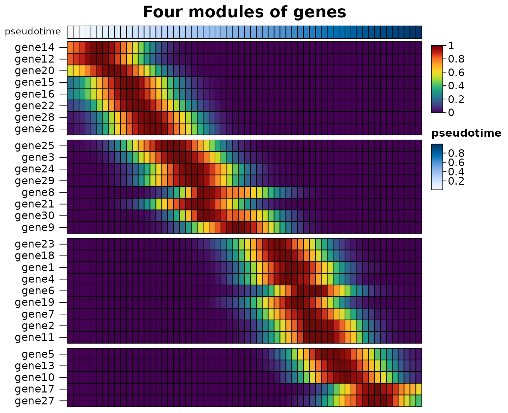
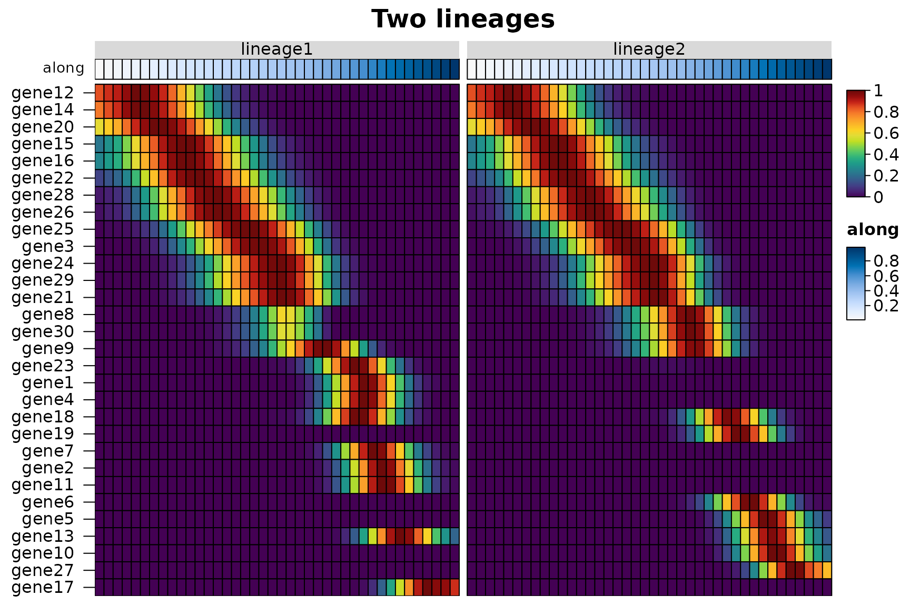
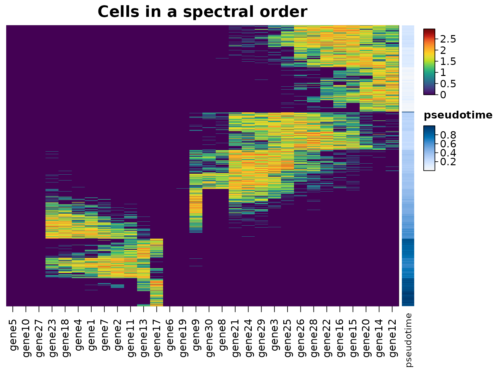

Cells that differentiate, respond or cycle change gradually, and
trajectory methods place each cell along the change with a pseudotime.
The heatmap of a trajectory has the genes as rows and the cells, or bins
of them, as columns in pseudotime order. The genes are ordered by when
they peak, so that a cascade of genes runs diagonally from the top left.
This guide draws such heatmaps with heat_map_smooth() and
peak orders, for one lineage and for several. It also shows how to order
cells when there is no pseudotime.
Example data
heat_map_example("trajectory") simulates 4,000 cells of
a branching trajectory, with a pseudotime for each of two lineages as
slingshot (Street et al. 2018) gives them (missing for cells outside the
lineage). Both lineages share their start and branch at a pseudotime of
0.4. 30 genes, in a random order, each peak at their own point, some in
one lineage only.
library(HeatmapR)
library(SingleCellExperiment)
traj <- heat_map_example("trajectory", class = "SingleCellExperiment")
traj
#> class: SingleCellExperiment
#> dim: 30 4000
#> metadata(0):
#> assays(2): counts logcounts
#> rownames(30): gene1 gene2 ... gene29 gene30
#> rowData names(0):
#> colnames(4000): cell1 cell2 ... cell3999 cell4000
#> colData names(3): pseudotime lineage1 lineage2
#> reducedDimNames(0):
#> mainExpName: NULL
#> altExpNames(0):
head(colData(traj))
#> DataFrame with 6 rows and 3 columns
#> pseudotime lineage1 lineage2
#> <numeric> <numeric> <numeric>
#> cell1 0.5858003 0.5858003 NA
#> cell2 0.0089458 0.0089458 0.0089458
#> cell3 0.2937396 0.2937396 0.2937396
#> cell4 0.2773750 0.2773750 0.2773750
#> cell5 0.8135742 0.8135742 NA
#> cell6 0.2604278 0.2604278 0.2604278Cells in pseudotime order
The cells sorted by their pseudotime, as columns
(swap_axes = TRUE), with the pseudotime as an annotation
track. Each gene is scaled from 0 to 1 (scale = "row"), and
tree_order_y = "peak" orders the genes by where they are
highest:
cells <- traj[, order(traj$pseudotime)]
heat_map(
cells,
swap_axes = TRUE,
scale = "row",
tree_order_y = "peak",
annotation_by = "pseudotime",
axis_text_x = NA,
title = "Cells in pseudotime order"
)
Single cells are noisy, and their order says nothing about how far apart they are along the trajectory.
Genes smoothed along pseudotime
heat_map_smooth() bins the cells along
along (a pseudotime column, or a vector) and finds each
gene’s mean in each bin, smoothed over its neighbours:
-
binssets the number of bins, 100 by default. -
binning = "cells"(default) gives bins of equal numbers of cells, which follow the density of the cells along the trajectory, and"width"bins of equal width alongalong. -
spansets the number of bins each mean is taken over: the bin itself and(span - 1) / 2bins either side, 5 by default.span = 1takes each bin on its own.
The means are found in compiled code, without a dense copy of sparse
data. The result has one row per bin and keeps the position of each bin,
which annotation_by draws as a track, and the number of
cells in each bin (bar_values_x = "n" with
swap_axes = TRUE). The peak order reads the position of
each bin.
smooth <- heat_map_smooth(traj, along = "pseudotime", bins = 60)
dim(smooth)
#> [1] 60 30
heat_map(
smooth,
swap_axes = TRUE,
scale = "row",
tree_order_y = "peak",
annotation_by = "pseudotime",
axis_text_x = NA,
title = "Genes along pseudotime"
)
Modules of genes
Genes that rise and fall together form modules.
tree_kmeans_y splits the genes into k-means clusters of the
smoothed values, and the peak order then orders the genes within each
module. The modules are ordered so that similar ones are neighbours,
here from early to late:
modules <- heat_map(
smooth,
swap_axes = TRUE,
scale = "row",
tree_kmeans_y = 4,
tree_order_y = "peak",
annotation_by = "pseudotime",
axis_text_x = NA,
title = "Four modules of genes"
)
split(names(heat_map_info(modules)$row_clusters),
heat_map_info(modules)$row_clusters)
#> $`1`
#> [1] "gene12" "gene14" "gene15" "gene16" "gene20" "gene22" "gene26" "gene28"
#>
#> $`2`
#> [1] "gene3" "gene8" "gene9" "gene21" "gene24" "gene25" "gene29" "gene30"
#>
#> $`3`
#> [1] "gene1" "gene2" "gene4" "gene6" "gene7" "gene11" "gene18" "gene19"
#> [9] "gene23"
#>
#> $`4`
#> [1] "gene5" "gene10" "gene13" "gene17" "gene27"Lineages side by side
Several along columns smooth each lineage on its own,
from the cells with a pseudotime in that lineage (group_by
does the same for one pseudotime and a lineage column). The lineages are
stacked in the result, and group_by = "lineage" draws them
side by side. The peak order reads the position of each bin along the
trajectory, so the genes of both lineages are ordered by when they
peak:
lineages <- heat_map_smooth(traj, along = c("lineage1", "lineage2"), bins = 40)
head(attr(lineages, "groups"))
#> lineage along
#> lineage1 / 1 lineage1 0.008310645
#> lineage1 / 2 lineage1 0.024960306
#> lineage1 / 3 lineage1 0.040551580
#> lineage1 / 4 lineage1 0.057537736
#> lineage1 / 5 lineage1 0.073592707
#> lineage1 / 6 lineage1 0.091877595
heat_map(
lineages,
swap_axes = TRUE,
group_by = "lineage",
scale = "row",
tree_order_y = "peak",
annotation_by = "along",
axis_text_x = NA,
title = "Two lineages"
)
Genes scaled within each row are compared across both lineages, so a gene that peaks in one lineage only is dark in the other.
Cells without a pseudotime
Without a pseudotime, tree_order_y = "spectral" orders
the cells themselves along the trajectory. The order comes from
recursive spectral bisection of the graph joining each cell to its
nearest neighbours, with no dendrogram (see the ordering guide). A spectral order is one path,
so a branching trajectory is ordered one lineage at a time. For
expression, correlation distances (dist_method = "pearson")
follow the change of the cells’ profiles better than Euclidean
distances, which a few highly expressed genes dominate. Here the genes
are ordered spectrally too, so genes high at the same stage sit
together:
lineage1 <- traj[, !is.na(traj$lineage1)]
ordered <- heat_map(
lineage1,
tree_order_y = "spectral",
dist_method = "pearson",
tree_order_x = "spectral",
annotation_by = "pseudotime",
axis_text_y = NA,
title = "Cells in a spectral order"
)
# HOW WELL THE ORDER FOLLOWS THE PSEUDOTIME (1 OR -1 FOR THE SAME ORDER)
order_y <- heat_map_info(ordered)$row_order
cor(seq_along(order_y), lineage1$pseudotime[order_y], method = "spearman")
#> [1] 0.9291877A spectral order can run either way along the trajectory, so its rank correlation with the pseudotime, printed above, is near 1 or -1 when it follows it.
References
Street, K. et al. (2018). Slingshot: cell lineage and pseudotime inference for single-cell transcriptomics. BMC Genomics, 19, 477. doi:10.1186/s12864-018-4772-0